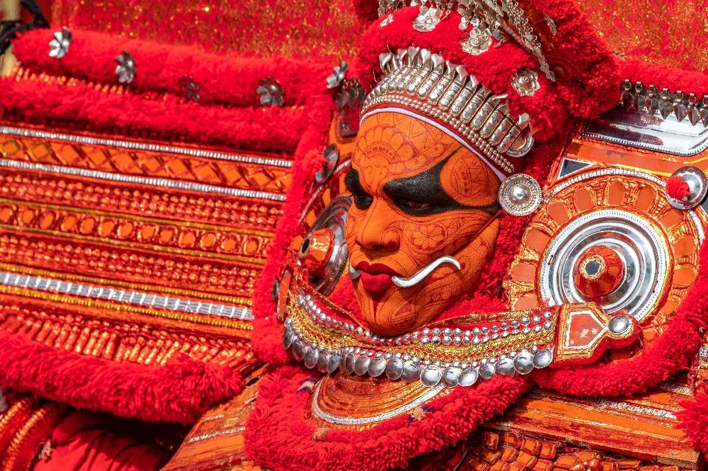
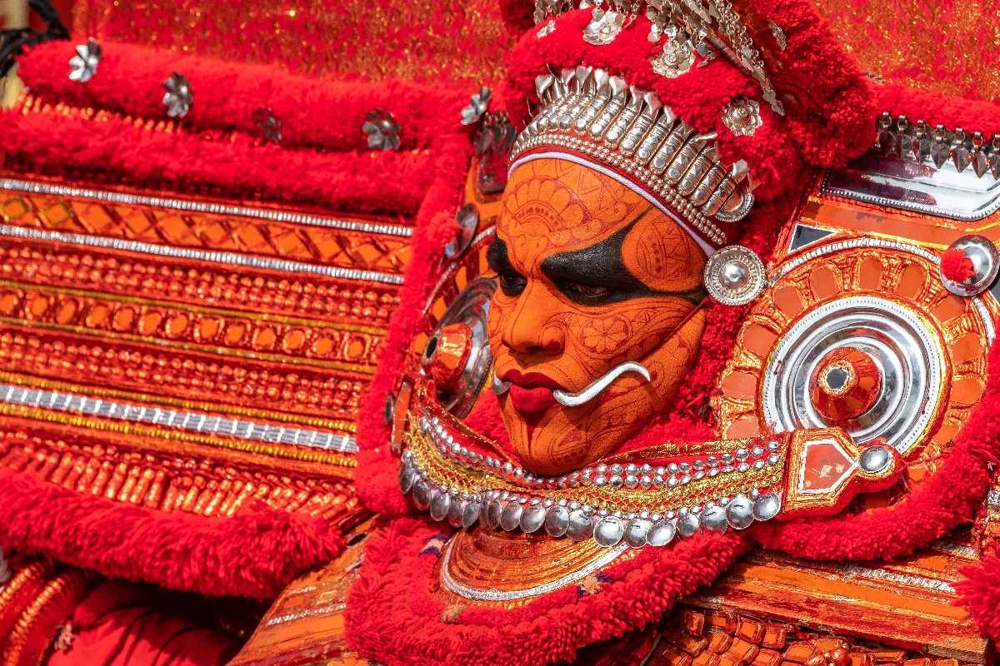

MAIN ATTRACTIONS
Muzzhapilangad beach
The Muzzhapilangad Drive-in Beach at Kannur is one referred to with many superlatives- as the longest drive-in beach in the whole of India, as one of the cleanest beaches of Kannur and most importantly, as one of the best drive-in beaches that the entire Asian continent has to offer.


Palakkayam thattu
Tucked away in the lush greenery of the Western Ghats and soaring at a dizzying altitude of 3500 feet above sea level, Palakayyam Thattu is one of the most beautiful hill stations in the entire state of Kerala. Adorned with luxuriously dense greenery, sky-touching trees and majestic hillocks, the view that Palakayyam Thattu enjoys is one that you will rarely find.
Kannur lighthouse
Being Kerala's first lighthouse ever and Kannur's only one, the Kannur Lighthouse is a pretty big deal. This cylindrical concrete tower has a balcony with a light that is lit as the evening breaks in to alert the seamen of the land.
 

Theyyam
Bringing life to intriguing myths and exciting legends, the Theyyam festival is one of the most eagerly awaited festivals of the vibrant city of Kannur. Drawing the attention of thousands of people every year from across the country, this festival is renowned as the most remarkable and riveting art form of Malabar, the northern part of Kerala.
Vismaya water theme park
Located near Taliparamba in Kannur in Kerala, Vismaya Water Park is a water themed park which is replete with a plethora of amusing rides and thrilling water sports. Spread across 30 acres of land area, the water park was inaugurated in August 2008, the water park boasts of a host of splash pools in addition to other facilities like a conference hall, prayer halls, restaurants and casual shops etc.